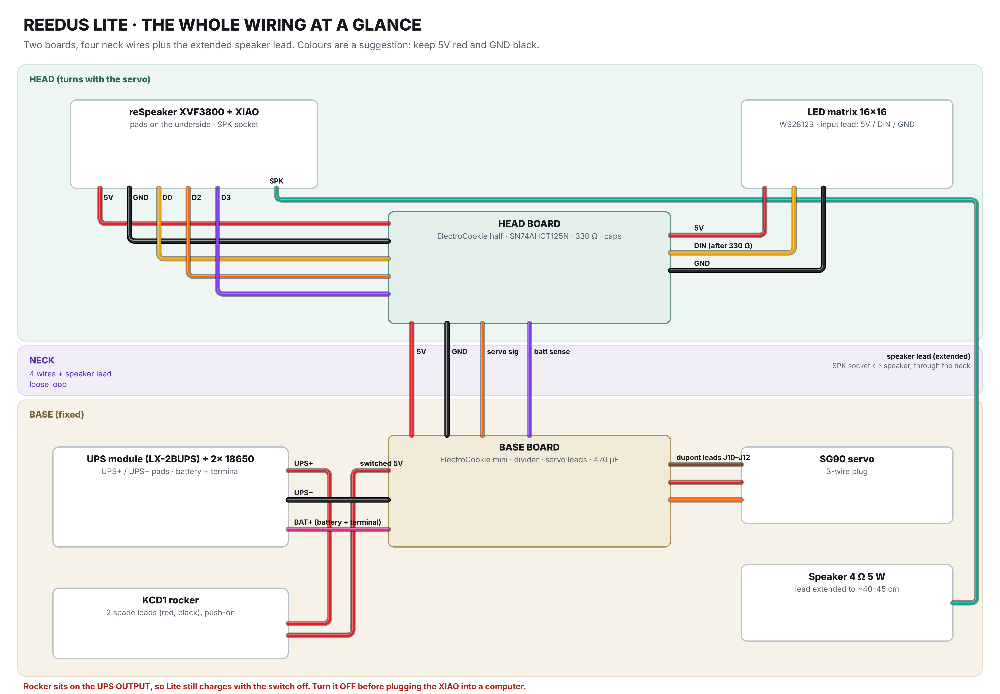
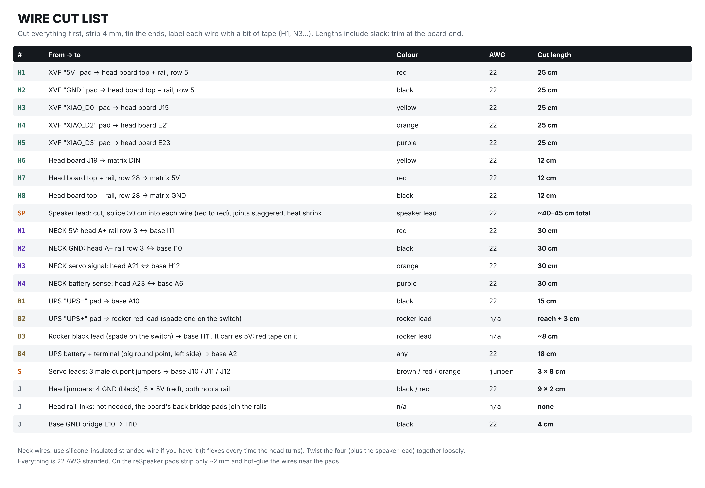
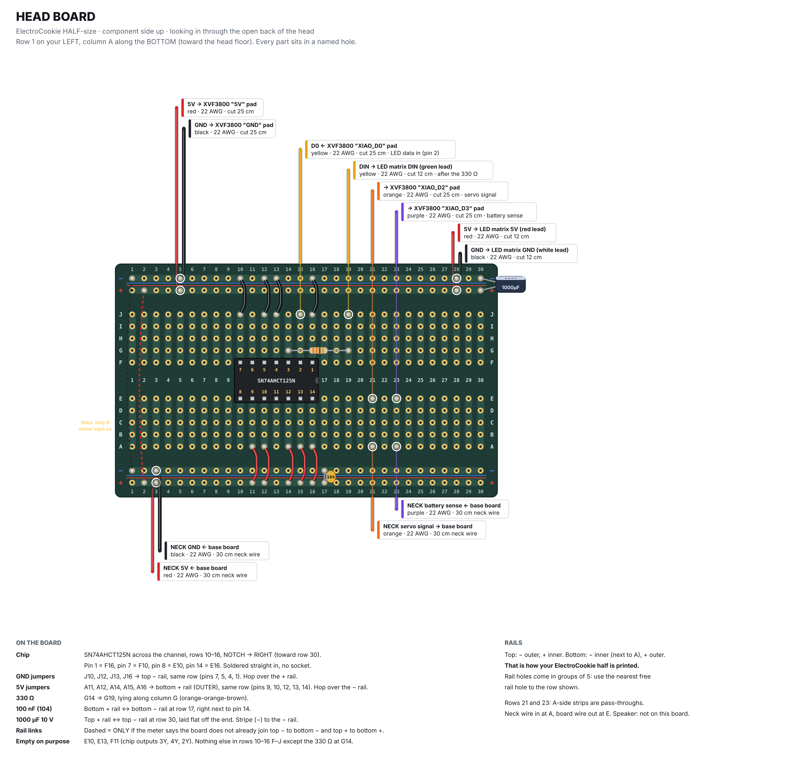
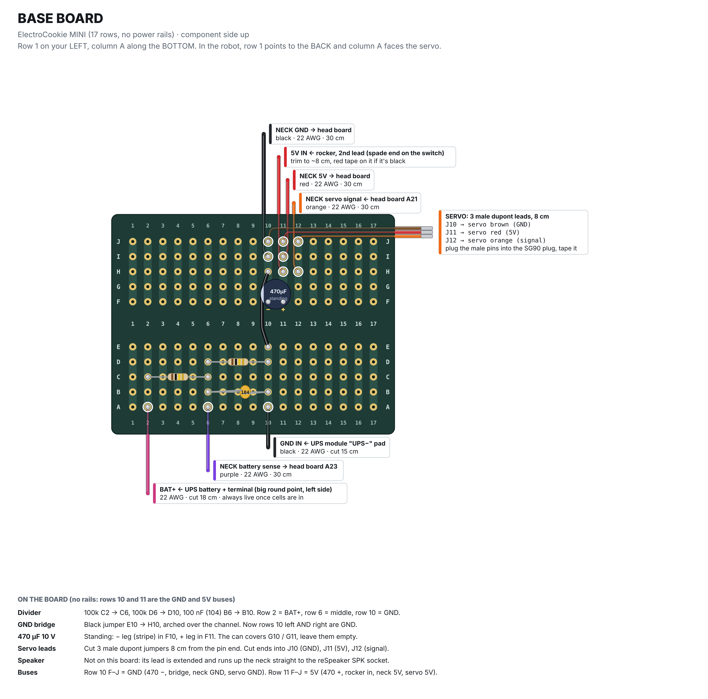
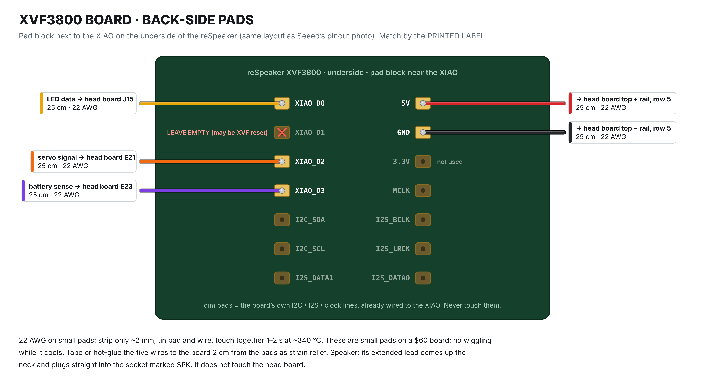
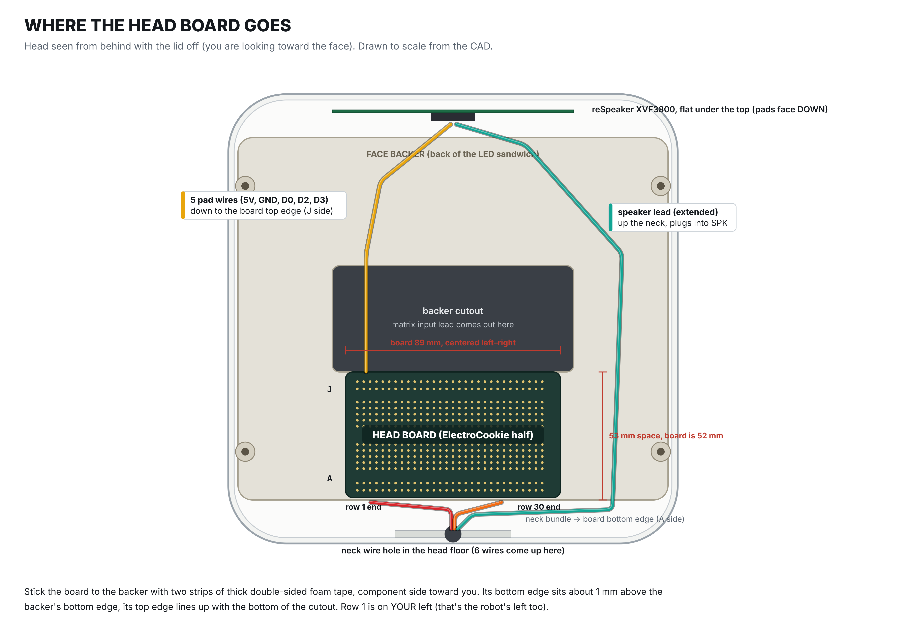
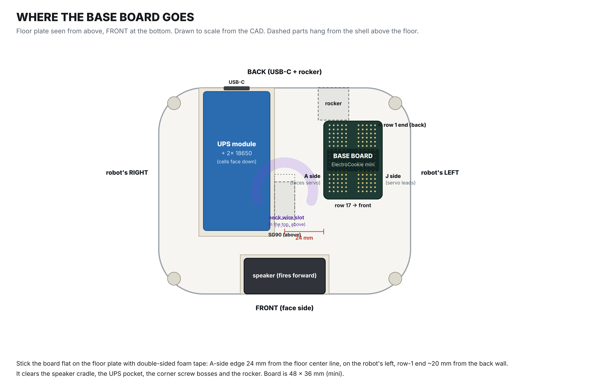

Pinch or scroll to zoom · drag to move · double-tap to jump in
100%
Two solderable breadboards, four neck wires plus the extended speaker lead, every hole named. An ElectroCookie half (30 rows, with rails) goes in the head behind the face. An ElectroCookie mini (17 rows, no rails) goes on the base floor. Tap any picture to open the zoom viewer: pinch or scroll to zoom, drag to move, double-tap to jump in, arrows to flip between diagrams. Tick boxes as you go; your phone remembers them.

The pins are the firmware's: D0 LED data, D2 servo, D3 battery sense. Wire it like this and nothing in config.h changes.
Cut, strip 4 mm, tin, and tape-label each one with its code. Lengths already include slack: you trim at the board end, never splice.

Board flat, component side up, row 1 on your left, column A along the bottom. On a breadboard the letters run A at the bottom to J at the top when the numbers read left to right, so it lands this way naturally. Solder lowest parts first so the board sits flat on the bench.

F16. Legs in E10–E16 and F10–F16. Tack two opposite corner pins, check it sits flat, then the rest at 1–2 s per pin. This is the one part you can't easily undo, so look twice.A11 A12 A14 A15 A16 each to the bottom + rail in the same row. On this board the bottom + rail is the outer one, so they hop over the − rail: arch them and keep the insulation over the − hole. These tie chip pins 9, 10, 12, 13 and 14.J10 J12 J13 J16 each to the top − rail in the same row. They hop over the + rail; keep the insulation right down to the board. Chip pins 7, 5, 4, 1.G14 to G19, lying flat along column G.E10, E13, F11 (the chip's unused outputs).No rails on the mini, so two strips do the job: row 10 (F–J) is the GND bus, row 11 (F–J) is the 5V bus. Same orientation as before: row 1 left, A at the bottom.

C2 → C6, 100 kΩ D6 → D10, both flat.B6 → B10.E10 → H10, arched over the channel.J10 (GND, brown or black), J11 (5V, red), J12 (signal, orange). Male pins stay free on the other end.F10, + leg in F11. Its can covers G10 / G11.A10 beeps to I10 and J10; H11 beeps to J11; row 10 to row 11 does not beep. A2 to A10 reads about 200 kΩ, A6 to A10 about 100 kΩ.Do this on the bench with the board out of the head. Five pads, five wires (H1–H5). Match the printed label next to each pad.

5V ← H1 red · GND ← H2 black · XIAO_D0 ← H3 yellow · XIAO_D2 ← H4 orange · XIAO_D3 ← H5 purple.XIAO_D1 stays empty. Don't touch the I2C, I2S, MCLK or 3.3V pads.SPK socket.Your module is the LX-2BUPS. Its corner pads are 5V+ / 5V− (charging input: leave empty, charge through the USB-C) and UPS+ / UPS− (the output). The four big round silver points are the battery holder's terminals; the 电池安装 drawing puts + on the left.
H11 in step 8. The other ends are push-on spades: the rocker snaps into the back wall empty from outside, then the spades push onto its two tabs from inside (either way round). They're a friction fit; the clear sleeve is part of the connector, not heat shrink, so keep heat off it.Face sandwich first (skin + grid, matrix, backer, 4× M3×8) as in the chassis notes. Then the head board goes on the back of the backer, centered, just below the cutout.

J19) to its DIN (usually green), H7 (top + rail, row 28) to its 5V (red), H8 (top − rail, row 28) to its GND (white). Go by the print at the panel's input pad; the strip arrows point away from the input. Leave the panel's spare power leads unconnected and taped.SPK.J15, H4 → E21, H5 → E23.A21, N4 sense → A23.The base board sticks to the floor plate on the robot's left of the servo, row 1 toward the back.

I11, N2 GND → I10, N3 servo → H12, N4 sense → A6.H11, UPS− wire (B1) → A10, BAT+ wire (B4) → A2.| Probe | Expect | If not |
|---|---|---|
Base I11 ↔ head bottom + rail | beep | N1 broken or in the wrong hole |
Base I10 ↔ head bottom − rail | beep | N2 |
| Head + rail ↔ head − rail | no beep (one chirp from the caps is fine) | short: look for a bridge on either board |
Base H12 ↔ reSpeaker XIAO_D2 pad | beep | N3 / H4 |
Base A6 ↔ reSpeaker XIAO_D3 pad | beep | N4 / H5 |
Head J15 ↔ chip pin 2 · chip pin 3 ↔ G14 | beep | chip in backwards? notch must face row 30 |
Servo plug: brown pin ↔ base A10, red pin ↔ H11, orange pin ↔ H12 | beep | dupont pins in the wrong order |
reSpeaker XIAO_D0 ↔ XIAO_D1, and D2 ↔ D3 | no beep | solder bridge on the pads |
| Across the speaker plug's 2 pins (before plugging in) | ~4 Ω | a bad joint in the extension |
WIRING.md, "Before the first power-up").A2 to A10: the cell voltage (3.0–4.2 V). Base A6 to A10: half of that.test (matrix orientation), servo 0 to center, doa, info (put meter volts / reported volts in BATT_CAL).